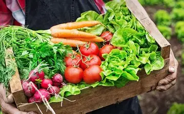
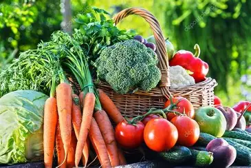
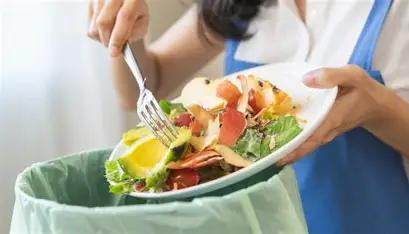
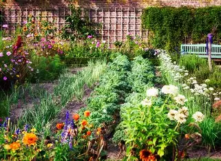

Fresh thoughts, healthy living, and farm stories.

Organic food isn’t just a trend — it’s a lifestyle. Discover how choosing organic can boost your health and the planet.
Read MoreExplore how sustainable agriculture preserves biodiversity, reduces pollution, and secures food for future generations.
Read More
At Organify, freshness is our promise. Learn how our process ensures every item you receive is at peak quality.
Read More
Food waste is a global issue — but you can help! Here are practical tips to make your kitchen more sustainable.
Read MoreLearn how organic fertilizers enrich soil naturally and create healthier, more resilient crops without chemicals.
Read More
Dreaming of growing your own veggies? Here’s a beginner’s guide to starting your backyard organic garden.
Read More